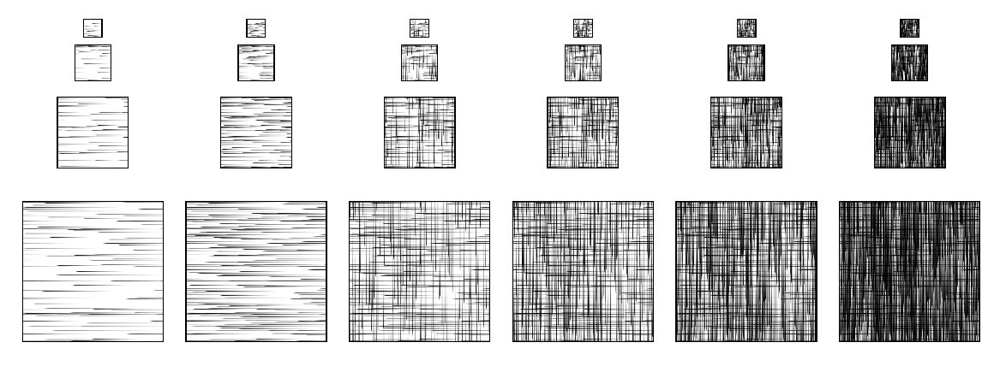
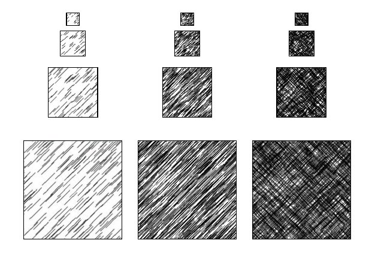
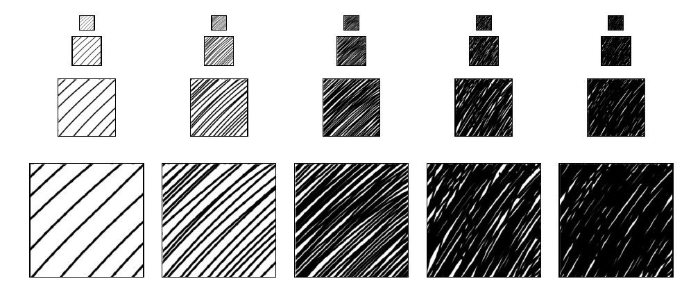
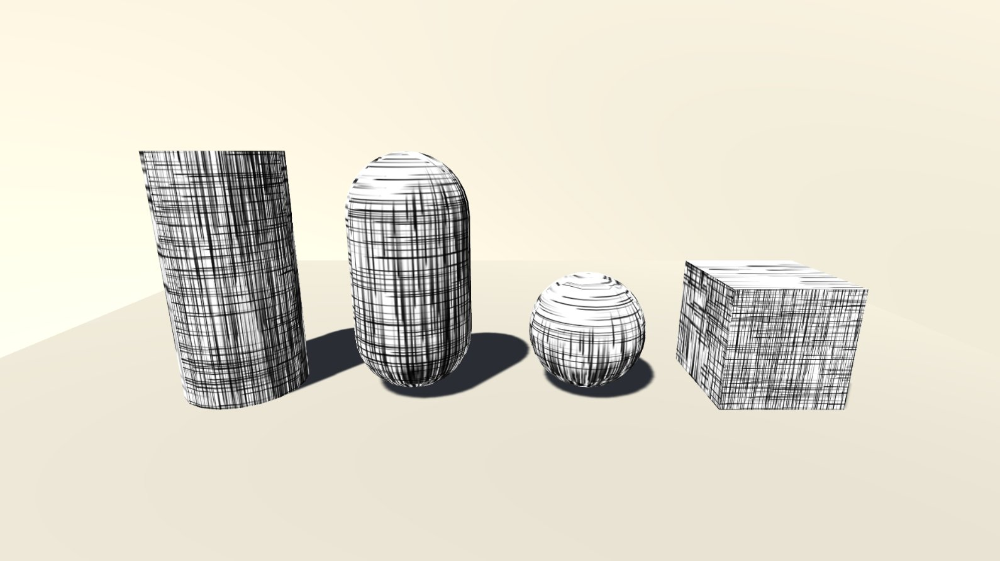
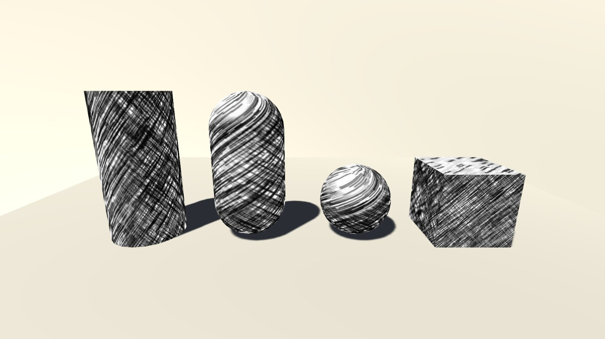
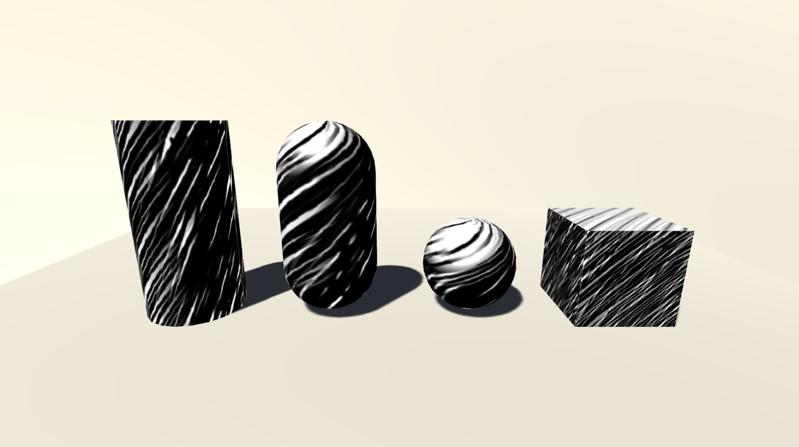
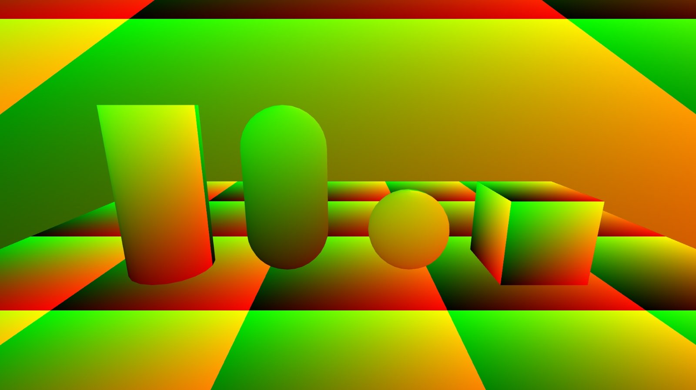
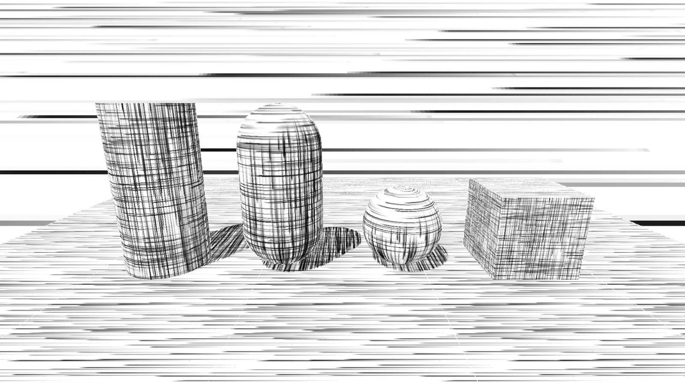
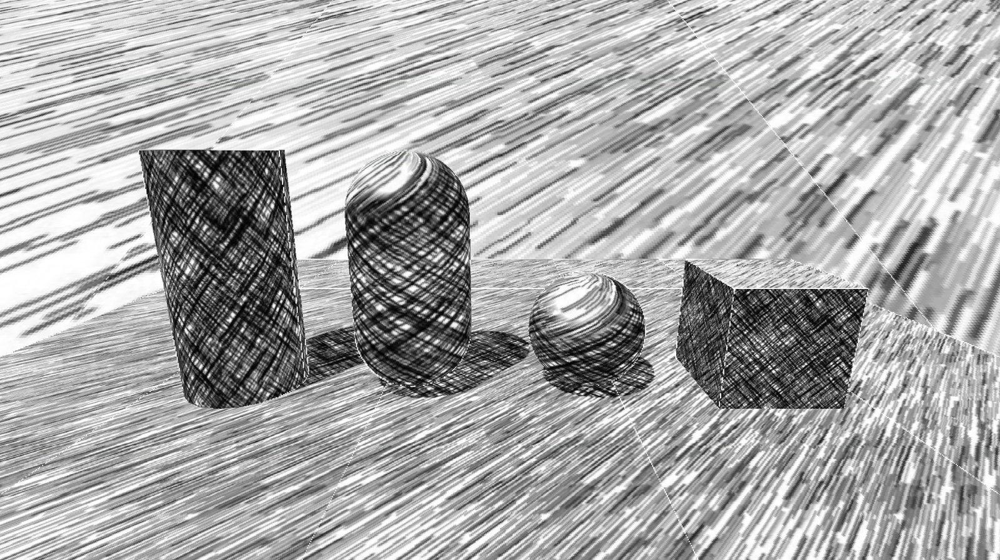
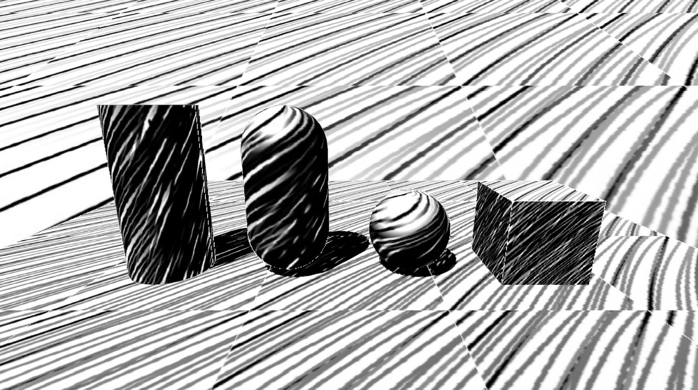

Tonal Art Maps 是一種非真實渲染技術，透過參考筆觸的疊加逐一生成 Tonal Art Maps 集合，依據畫面的顏色將其轉換為對應的 Tonal Level 及 Minmap Level，取樣不同的 Tonal Art Texture 後將畫面以含有該筆觸特性的方式呈現出來。
生成 Tonal Art Maps 的方法有很多種，可以自行定義想要呈現的筆觸樣式、粗細、密度、方向來動態進行烘焙，也可以透過影像處理軟體如 Photoshop 生成。

水平筆觸
交叉筆觸
斜線筆觸Tonal Level 變大
盡量採用疊加的方式，在前一層的貼圖為基礎下建立下一層的貼圖，可以在取樣過渡時有更好的結果。
Minmap Level 變大
盡量保持筆觸的密度，如上方的水平筆觸在不同的 Minmap Level 中依然保持一樣的筆觸密度，而交叉筆觸與斜線筆觸是直接複製，導致 Minmap Level 上升時筆觸密度也跟著上升，可以觀察後續實作成果的差異。
1. 定義 Texture2DArray
UNITY_DECLARE_TEX2DARRAY(_TonalArtMap);2. 轉換像素顏色為灰階
fixed grayscale = dot(float3(0.2126, 0.7152, 0.0722), color);3. 轉換灰階為 Tonal Level 及 Mipmap Level
grayscale = (1 - grayscale) * _MaxTonalLv;
fixed tonalLv = floor(grayscale);
fixed minmapLv = ceil(grayscale);4. 使用 Object UV 獲得最終取樣結果
fixed4 col1 = UNITY_SAMPLE_TEX2DARRAY(_TonalArtMap, float3(IN.uv_TonalArtMap, tonalLv));
fixed4 col2 = UNITY_SAMPLE_TEX2DARRAY(_TonalArtMap, float3(IN.uv_TonalArtMap, minmapLv));
color = lerp(col1, col2, grayscale - tonalLv);
水平筆觸
交叉筆觸
斜線筆觸離線
1. 實作 Object UV Shader
v2f vert (appdata v)
{
v2f o;
o.vertex = UnityObjectToClipPos(v.vertex);
o.uv = TRANSFORM_TEX(v.uv, _MainTex);
return o;
}
float4 frag (v2f i) : SV_Target
{
return fmod(i.uv.xyxy, 1.0);
}2. 建立 Object UV Texture
3. 建立及設定 Object UV Camera
實時
1. 更新 Object UV Texture

Object UV Texture2. 定義 Texture2DArray
3. 轉換像素顏色為灰階
4. 轉換灰階為 Tonal Level 及 Mipmap Level
5. 使用 Object UV Texture 獲得最終取樣成果

水平筆觸
交叉筆觸
斜線筆觸動態展示
Real-Time Hatching
【《Real-Time Rendering 3rd》 提炼总结】(十) 第十一章 · 非真实感渲染(NPR)相关技术总结
Hatch Shading